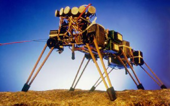

'Genghis', einer der ersten Laufroboter, von Brooks im ‘Mobile Robots Lab' am Massachusetts Institute für Technologie entwickelt, feiert sein Debüt. Der Beginn der 4ten Computergeneration wird auf diese Zeit datiert. Computer Schaltkreise (IC's) mit mehr als 500.000 Komponenten werden gebaut.